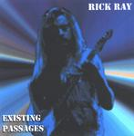

| Artist: | Rick Ray |
| Title: | Existing Passages |
| Label: | Neurosis records no catnr |
| Length(s): | 75 minutes |
| Year(s) of release: | 2002 |
| Month of review: | [02/2002] |
| 1) | Bubblehead | 3.36 |
| 2) | Missing You | 5.15 |
| 3) | Can't Take The Plastic | 3.30 |
| 4) | You Say, You Mean | 5.22 |
| 5) | Moldy Rope Non-filter | 4.15 |
| 6) | Executer Computer | 6.46 |
| 7) | The Glasses | 2.53 |
| 8) | Dominion | 4.32 |
| 9) | The Oblivious | 1.38 |
| 10) | One Dead, One Left | 3.51 |
| 11) | Door To Nowhere | 2.20 |
| 12) | They Found A Fool | 6.36 |
| 13) | Headed Towards Nothing | 3.18 |
| 14) | Beginning To Scream | 0.48 |
| 15) | Change | 4.53 |
| 16) | Etched In My Mind | 3.44 |
| 17) | Made To Last | 3.57 |
| 18) | Love Blinds Hate | 4.06 |
| 19) | Dead Sea | 3.19 |